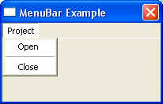

MenuBar()
Syntax
MenuBar()Description
Creates a separator bar in the current menu.
Parameters
None.
Return value
None.
Example
If OpenWindow(0, 200, 200, 200, 100, "MenuBar Example") If CreateMenu(0, WindowID(0)) ; here the menu creating starts.... MenuTitle("Project") MenuItem(1, "Open") MenuBar() ; here the separator bar will be inserted MenuItem(4, "Close") EndIf Repeat : Until WaitWindowEvent() = #PB_Event_CloseWindow EndIf
See Also
MenuTitle(), MenuItem(), OpenSubMenu(), CreateMenu(), CreatePopupMenu()
Supported OS
All